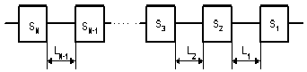
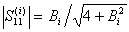
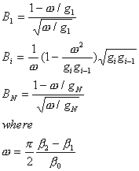
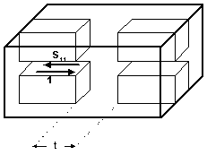
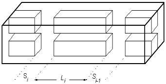
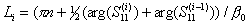

Simple Procedure to Design a Filter with
Direct Coupled Resonators
Although computer market is full of all kind of
sophisticated software able to “simulate” everything, the filter technology has
not moved from 60-s at all. That time engineers designed filters of the same
type without software and even without computers. Let assume the software can simulate any kind of magic structures.
But where can we get that magic structures? By other word the software is not
provided by a design procedure. However modern software allows using a big
variety of new type of partial elements (not only irises, posts, etc.). Here
below an approach to design a “direct-coupled” filter using a “simulator”.
|
Low-pass filter prototype ladder network |
Initially the low-pass
prototype network elements values have to be found. They are normalized to
roll-off frequency point (w) equal to unity and depends on the filter order and
response type (Chebychev or maximally flat). |
||
|
subroutine
PreFilter(index,N,Lar,G) real
G(30),a(30),b(30),Lar pi=3.141592653 eN=2*N if(index.eq.0)then do
i=1,N e2=2*i-1 G(i)=2.*sin(pi*e2/eN) enddo endif if(index.eq.1)then xx=Lar/17.37 be=alog(cosh(xx)/sinh(xx)) |
v=sinh(be/eN) do
i=1,N e2=2*i-1 a(i)=sin(pi*e2/eN) b(i)=v*v+(sin(i*pi/N))**2 enddo G(1)=2.*a(1)/v do
i=2,N G(i)=4.*a(i-1)*a(i)/(b(i-1)*G(i-1)) enddo endif return end |
There are simple expressions
for g-values corresponding to Chebychev or Butterworth (maximally flat)
responses in many microwave engineering books, for example, [1,2]. A fortran
subroutine computing array of g-values from initial filter parameters is
written in the left two sells of the table. The input parameters of the
subroutine are index (0
for maximally flat or 1 for Chebychev), N (filter order), Lar
(pass-band insertion loss ripple, dB). |
|
|
 Network of s-parameters
corresponding to filter structure The next step is to calculate
reflection coefficients (S11) of each element of the filter at
central frequency (b0)network
required by the prototype.  where Bi
is equivalent susceptance of i-th element. Those values are
obtained from the filter bandwidth (b1 - b2)
and g-values using the expressions written on right. |
 |
||
|
 An filter partial element (brick). In case of filter
based on double ridged waveguide the parameter may be the length of
evanescent waveguide section. |
After the reflection
coefficients of network elements are found the network elements may be
replaced by real elements providing the same reflection value at the filter
central frequency. Such an element may be any kind of reactive discontinuity
as iris, stub, evanescent mode section, post, etc. The reflection coefficient
of that element has to be depended on a dimension parameter and vary in wide
range if the parameter changes. For example, for an iris such a parameter may
be width of the iris or its thickness. For inductive post it can be diameter
of the post or distance to the waveguide wall. Actually there is no limitation what kind of discontinuities
can be used to built a filter. It is just desirable to select all partial
elements from the same family. |
||
|
After those partial elements
(filter bricks) are specified, the parameter values providing the prototype
reflection values are to be found. To find those dimensions commercial
software may be used. For many cases engineering formulas given in [1-4] for stubs, posts and irises may be
used. The dimensions of each element (parameters) then may be found from a
tabulated function of S11(b0,t) visually or using a numerical
approach. |
|||
|
 |
After the dimension of each
element is found, the distances between the elements can be also found.
Distance between any two elements is associated with the phases of their
reflection coefficients, ie  where n is the
resonance number. This length is usually called as cavity length despite for
many structures, for example, evanescent mode ridged filter it may look like
an iris or post. |
||
|
subroutine Opti(Ns,N,fun,dx,x)
real x(30),x0(30),Fx(30)
external fun do
istep=0,Ns
F0=fun(N,x)
print*, F0
Fn=0. do
i=1,N
call Variation(N,i,dx,x,x0)
Fx(i)=(fun(N,x0)-F0)/dx
Fn=Fn+(Fx(i))**2
enddo
Fn=sqrt(Fn) do
i=1,N
x(i)=x(i)-Fx(i)/Fn*dx
enddo
enddo
return end |
subroutine Variation(N,i,dx,x0,x1)
real x0(30),x1(30) do
j=1,N if(j.ne.i)then
x1(j)=x0(j)
else
x1(j)=x0(j)+dx
endif
enddo
return end Ns
is number of optimization steps, N is number of parameters, dx is increment, x is array of initial parameters and fun(N,x) is the function to be optimized |
As the procedure is quite
approximate, the obtained structure needs tuning elements or to be verified
by an accurate software. Software based on mode-matching or integral equation
numerical methods are better for this purpose than any kind of “mesh”
software (see Software
page). It is very likely
that the filter response will need some corrections. The procedure can be
repeated again and again until the filter roll-off and bandwidth are in right
place. The reflection ripple (return loss) may also need adjustment. |
|
|
Commercial optimizers like
OSA-90 may be used to improve and equalize the filter’s return loss. The most
popular optimization techniques are MINIMAX and L2. These gradient methods
may be easy realized in FORTRAN code, if a commercial optimizer is not
available. A simple optimization subroutine
is shown on left two cells of this table. |
|||